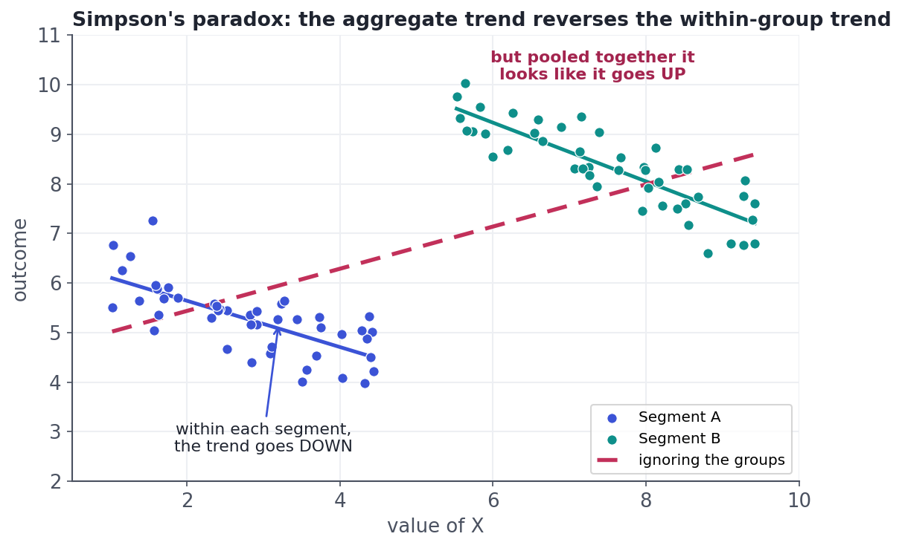

The Pitfalls Catalog
Peeking, p-hacking, Simpson's paradox, and twyman's law.
Most A/B "wins" that fail to replicate didn't die in the math — they died in a trap. The statistics can be flawless and the conclusion still wrong, because the experiment was peeked at, sliced until something sparkled, or pooled across groups that shouldn't be pooled. This lesson is the catalogue of ways experiments lie, and how seasoned analysts refuse to be fooled. Knowing these is what makes you trustworthy — and they're the "what could go wrong?" half of the interview.
Pitfall 1Peeking: the slow-motion false positive
The tempting sin: watch the p-value daily and stop the moment it dips below 0.05. The problem is that with no real effect, the p-value wanders randomly, and a random walk will cross 0.05 eventually if you keep looking. So peeking and stopping on the first significant result turns a 5% false-positive rate into something like 20–30%. Prove it to yourself: run many experiments with no real difference and check the false-positive rate of a single look at the end — it should sit right at the nominal 5%:
import numpy as np
from scipy import stats
rng = np.random.default_rng(1)
n_exp, n, p = 4000, 3000, 0.10 # 4000 A/A experiments, no real effect (both arms 10%)
xa = rng.binomial(n, p, n_exp) # conversions, control
xb = rng.binomial(n, p, n_exp) # conversions, treatment (same true rate!)
pool = (xa + xb) / (2*n)
se = np.sqrt(pool*(1-pool) * 2/n)
z = (xb - xa) / n / se
pval = 2 * (1 - stats.norm.cdf(np.abs(z)))
print(f"single look at the end -> false-positive rate: {(pval < 0.05).mean():.1%}")
print("(peeking every day and stopping at the first p<0.05 would push this toward ~25%)")single look at the end -> false-positive rate: 5.2% (peeking every day and stopping at the first p<0.05 would push this toward ~25%)
A single, planned look is calibrated — about 5% false positives, exactly as advertised. Peeking breaks that guarantee. Fix the sample size in advance and look once; if you genuinely need to stop early, use methods built for it (sequential testing / alpha-spending).
Pitfall 2p-hacking and the garden of forking paths
p-hacking is torturing the data until it confesses: try 15 metrics, 8 segments, 3 date ranges, and "with and without outliers," then report whatever crossed 0.05. Each choice is a coin flip, so somewhere in that garden of forking paths a false positive is almost guaranteed. A close cousin is HARKing (Hypothesizing After the Results are Known) — inventing the hypothesis to fit whatever you found, then presenting it as if you'd predicted it. The antidote is pre-registration: write down the primary metric, the segments, and the analysis before you see the data, and treat anything discovered afterwards as a hypothesis for a new test, not a result.
Pitfall 3Simpson's paradox: pooling can flip the answer
The most mind-bending trap: a trend that holds in every subgroup can reverse when you pool the groups together. Below, the outcome falls with X inside each segment — but ignore the segments and it appears to rise:

In an A/B test this bites when your arms have a different mix of users. If treatment happened to get more of a naturally-high-converting segment, it can look like a winner overall while losing in every segment (or vice versa). This is exactly why the SRM check (Lesson 6.2) and segment-level sanity checks matter: before trusting a pooled number, confirm the groups are comparable and the effect is consistent across segments. When in doubt, trust the within-segment story over the aggregate.
Pitfalls 4 & 5Novelty, primacy, and Twyman's law
Two more:
- Novelty effect: a new feature gets a temporary bump because it's new — users poke at it out of curiosity — and the lift fades. Its mirror, the primacy effect, is an initial dip from users annoyed by change, which then recovers. A test that's too short measures the curiosity spike, not the steady state. Run long enough for the curve to flatten, and check whether the effect holds for users on their tenth exposure, not just their first.
- Twyman's law: "any figure that looks interesting or surprising is probably wrong." A shocking +40% lift is far more likely a tracking bug, a broken split, or bot traffic than a real miracle. Great experimenters greet surprising wins with suspicion first — re-check the pipeline, the SRM, and an A/A test — and only then celebrate.
Interactive labYour turn — measure the honest false-positive rate
Simulate A/A tests — experiments where the two arms are truly identical (both convert at 10%). Over n_exp experiments with a single look each, compute the fraction that come out "significant" (p < 0.05) and assign it to answer, rounded to 2 decimals. What number should an honest, single-look test produce?
xa, xb (A/A conversions), n, n_exp loaded; numpy + scipy imported. First Run loads scipy.(pval < 0.05).mean() and round to 2 decimals.pool = (xa + xb) / (2*n)
se = np.sqrt(pool*(1-pool) * 2/n)
z = (xb - xa) / n / se
pval = 2 * (1 - stats.norm.cdf(np.abs(z)))
answer = round(float((pval < 0.05).mean()), 2)It lands near 0.05 — a properly-run single-look test has exactly the false-positive rate you signed up for. Peeking and stopping early is what breaks that guarantee.
★ Key points to remember
- Peeking (checking repeatedly and stopping at the first p<0.05) inflates false positives to ~25%+; a single planned look is calibrated at 5%. Use sequential methods if you must stop early.
- p-hacking / HARKing: trying many metrics/segments/cutoffs and reporting whatever's significant. Fix: pre-register the primary metric and analysis.
- Simpson's paradox: a within-group trend can reverse when pooled — check the arms are comparable (SRM) and the effect is consistent across segments.
- Novelty/primacy effects fade or reverse; run long enough to reach steady state.
- Twyman's law: a surprising result is probably a bug — re-check SRM, an A/A test, and the pipeline before believing it.
◆ Practice▸
Show solution & reasoning
Two problems: (1) peeking / early stopping — stopping the instant p dipped below 0.05 (especially after watching it) inflates the false-positive rate well beyond 5%, so p = 0.048 isn't trustworthy; (2) too short — three days likely captures a novelty spike, not the steady-state effect, and probably didn't reach the planned sample size (underpowered). What I'd do: honour a pre-set sample size / duration computed from a power analysis, run to it without acting on interim peeks, verify SRM, and only then read the result once — reporting the confidence interval, not just a borderline p.
Show solution & reasoning
Pre-register everything before launch: the single primary metric and its success threshold (MDE), the exact analysis (test, one/two-sided), the sample size / duration from a power calc, and any segments you'll look at (with a multiple-comparison correction if more than one). Lock the test set of decisions before seeing data; run SRM/A-A trust checks; and treat anything discovered afterwards as a new hypothesis to be confirmed in a fresh experiment, never as a result from this one. With the choices fixed in advance, there are no forking paths left to exploit.
◎ Deep dive: alpha-spending, interference/SUTVA, and the in-house winner's curse▸
Why peeking inflates error, precisely. Under the null, the test statistic follows a random walk. A single fixed look controls the false-positive rate at α because you evaluate the walk once. Every additional look is another opportunity for the walk to breach the threshold, so the family-wise error compounds — roughly, k independent looks push the false-positive rate toward 1 - (1-α)^k. Principled fixes spend the α budget across looks: alpha-spending (O'Brien-Fleming, Pocock) or group-sequential designs let you stop early while keeping the overall error at 5%. This is a whole subfield — the lesson is: don't improvise early stopping.
Interference breaks the core assumption. Standard analysis assumes one user's treatment doesn't affect another's outcome (SUTVA). In social networks, marketplaces, and anything with shared resources, that fails — treating some users spills onto controls (they see treated friends' posts; treated buyers deplete shared inventory). The result is a biased effect estimate no sample size can fix. Remedies: cluster-level randomization (by region, community, or seller) so spillovers stay within a bucket, or specialised network-experiment designs.
The meta-pitfall: the winner's curse and publication bias, in-house. Teams launch dozens of experiments and ship the ones that "won." But among many noisy tests, the ones that cross the line are disproportionately the ones that got lucky-high — so shipped effects are systematically overstated, and aggregate impact never quite adds up to the sum of the wins. Mature programs counter this with replication of important wins, holdback groups that keep a slice of users on the old experience to measure long-run cumulative impact, and healthy skepticism toward any single significant result.
"What could go wrong with this experiment?" is a guaranteed question. Have the catalogue ready: peeking (inflates false positives — look once or go sequential), p-hacking/multiple comparisons (pre-register), Simpson's paradox (check SRM + segments), novelty/primacy (run to steady state), and Twyman's law (verify surprising results). Naming these unprompted signals real experience.